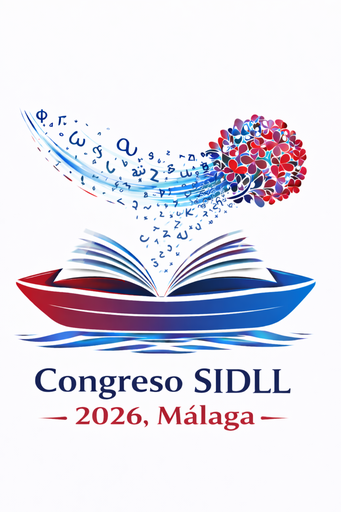

XXVII Congreso Internacional SIDLL 2026
Actualizar
Programa (comunicaciones)
Sesiones / mesas
Todos los días
Todos los horarios
Todas las aulas
Todos los ejes
Todos los tipos
Sin resultados con estos filtros.